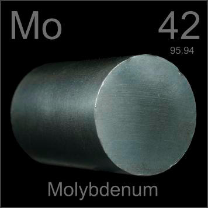

HOME
PREVIOUS
NEXT

Molybdenum
Atomic Weight: 95.95
Density: 10.28 g/cm3
Melting Point: 2623 °C
Boiling Point: 4639 °C
Pure molybdenum is used in specialized high temperature applications because it maintains its strength better than molybdenum steel, a common high-strength alloy. Large pure bars like this are unusual.